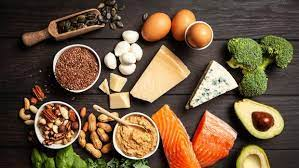
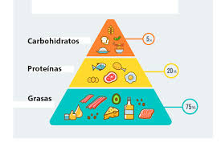

¿que es la dieta cetogenica?
La dieta cetogénica (también conocida como la dieta ceto) consiste en alimentos altos en grasas, bajos en carbohidratos y niveles adecuados de proteína que puede utilizarse para el tratamiento de la epilepsia en algunos niños.
 